visualize fits from an fG_mpm object
# S3 method for fG_mpm plot( x, y = NULL, se = FALSE, pages = 0, ncol = 1, ask = TRUE, pal = "Zissou1", rev = FALSE, ... )
Arguments
| x | a |
|---|---|
| y | optional |
| se | logical (default = FALSE); should points be scaled by |
| pages | plots of all individuals on a single page (pages = 1; default) or each individual on a separate page (pages = 0) |
| ncol | number of columns to use for faceting. Default is ncol = 1 but this may be increased for multi-individual objects. Ignored if pages = 0 |
| ask | logical; if TRUE (default) user is asked for input before each plot is rendered. set to FALSE to return ggplot objects |
| pal |
|
| rev | reverse colour palette (logical) |
| ... | additional arguments to be ignored |
Value
a ggplot object with either: 1-d time series of gamma_t estimates (if y not provided), with estimation uncertainty ribbons (95 % CI's);
or 2-d track plots (if y provided) coloured by gamma_t, with smaller points having greater uncertainty (size is proportional to SE^-2, if se = TRUE).
Plots can be rendered all on a single page (pages = 1) or on separate pages.
Examples
# plot mpm fit object # 1-d time-series plots plot(xm) #> $`ct36-E-09`#> #> $`ct36-F-09`
#> ## generate a fG_ssm fit object (call is for speed only) xs <- fit_ssm(sese2, spdf=FALSE, model = "rw", time.step=72, control = ssm_control(se = FALSE, verbose = 0)) #> #> # 2-d track plots by adding ssm fit object plot(xm, xs) #> $`ct36-E-09`  #> #> $`ct36-F-09`  #>